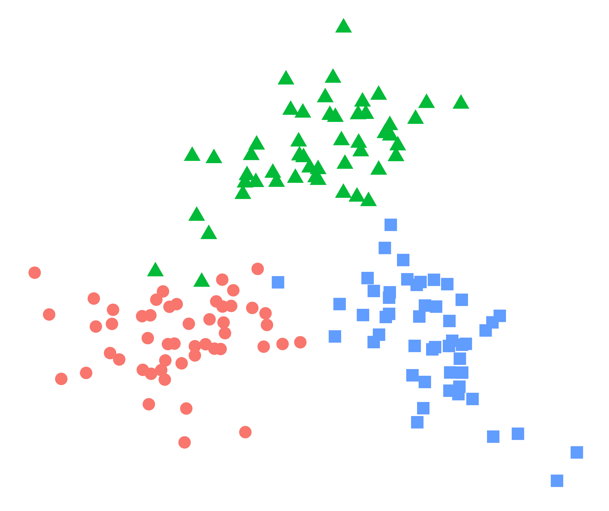

- Methods for Big Data
Research
Completed Third-Party Research Projects
-
Traditional regression models often provide an overly simplistic view on complex associations and relationships to contemporary data problems in the area of biomedicine. In particular, capturing relevant associations between multiple clinical endpoints correctly is of high relevance to avoid model misspecifications, which can lead to biased results and even wrong or misleading conclusions and treatments. As such, methodological development of statistical methods tailored for such problems in biomedicine are of considerable interest. It is the aim of this project to develop novel conditional copula regression models for high-dimensional biomedical data structures by bringing together efficient statistical learning tools for high-dimensional data and established methods from economics for multivariate data structures that allow to capture complex dependence structuresbetween variables. These methods will allow us to model the entire joint distribution of multiple endpoints simultaneously and to automatically determine the relevant influential covariates and risk factors via algorithms originally proposed in the area of statistical and machine learning. The resulting models can then be used both for the interpretation and analysis of complex association-structures as well as for prediction inference (simultaneous prediction intervals for multiple endpoints). Additional implementation in open software and its application in various studies highlight the potentials of this project’s methodological developments in the area of digital medicine.


-
Experiment Shallow priors and deep learning: The potential of Bayesian statistics as an agent for deep Gaussian mixture models (funded by the Volkswagenstiftung)
(Duration: 01.08.2021 - 28.02.2025)Despite significant overlap and synergy, machine learning and statistical science have developed largely in parallel. Deep Gaussian mixture models, a recently introduced model class in machine learning, are concerned with the unsupervised tasks of density estimation and high-dimensional clustering used for pattern recognition in many applied areas. In order to avoid over-parameterized solutions, dimension reduction by factor models can be applied at each layer of the architecture. However, the choice of architectures can be interpreted as a Bayesian model choice problem, meaning that every possible model satisfying the constraints is then fitted. The authors propose a much simpler approach: Only one large model needs to be trained and unnecessary components will empty out. The idea that parameters can be assigned prior distributions is highly unorthodox but extremely simple bringing together two sciences, namely machine learning and Bayesian statistics.
Funded by:

